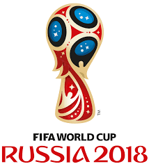
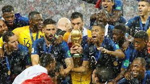

מונדיאל 2018
 מארחת: רוסיה
תקופת התחרות: 14 ביוני 2018 – 15 ביולי 2018 (4 שבועות ו־4 ימים)
מספר משתתפות: 32
הזוכה: צרפת
מספר משחקים: 64
מלך השערים: הארי קיין
השחקן המצטיין: לוקה מודריץ'
המדינה המארחת

צוות ההצעה הרוסית חוגג לאחר ההכרזה על מינוי רוסיה לארח את המשחקים
Postscript-viewer-blue.svg ערך מורחב – המכרזים לבחירת המארחות של מונדיאל 2018 ומונדיאל 2022
רוסיה נבחרה לארח את המונדיאל בתהליך בחירת המדינה המארחת, שהחל בינואר 2009, כשלראשונה כלל התהליך הכרזה לשני טורנירים. מבין 11 הצעות שהוגשו לפיפ"א על המכרז לשני הטורנירים, 8 כללו הצעה לאירוח מונדיאל 2018[4]: אנגליה, רוסיה, ארצות הברית, אוסטרליה, יפן, מקסיקו, והצעות משותפות של ספרד ופורטוגל ושל הולנד ובלגיה. בהמשך משכו המדינות הלא אירופיות את מועמדותן לאירוח מונדיאל 2018 ולאחר הצבעה שקיימה פיפ"א בנושא ב-2 בדצמבר 2010, נבחרה רוסיה ברוב קולות לארח את הטורניר, לאחר שגברה על הצעותיהן של ספרד פורטוגל, הולנד, בלגיה, ואנגליה בהתאמה.
תקציב המונדיאל עמד על כ-13 מיליארד דולרים[5].
אוהדים יכלו להיכנס לרוסיה ללא ויזה תוך שימוש ב-Fan ID.
גמר המונדיאל
 גמר מונדיאל 2018 התקיים ב-15 ביולי באצטדיון לוז'ניקי במוסקבה בירת רוסיה, ובו נקבע שנבחרת צרפת היא אלופת העולם בכדורגל לשנת 2018. בגמר התמודדו נבחרת צרפת ונבחרת קרואטיה. זאת הייתה הפעם הראשונה שנבחרת קרואטיה השתתפה במשחק גמר מונדיאל. לנבחרת צרפת הייתה זאת הפעם השלישית בגמר, לאחר שניצחה את משחק גמר מונדיאל 1998 והפסידה בגמר מונדיאל 2006. זו הפעם הרביעית ברציפות שאלופת העולם היא אירופאית.
גמר מונדיאל 2018 התקיים ב-15 ביולי באצטדיון לוז'ניקי במוסקבה בירת רוסיה, ובו נקבע שנבחרת צרפת היא אלופת העולם בכדורגל לשנת 2018. בגמר התמודדו נבחרת צרפת ונבחרת קרואטיה. זאת הייתה הפעם הראשונה שנבחרת קרואטיה השתתפה במשחק גמר מונדיאל. לנבחרת צרפת הייתה זאת הפעם השלישית בגמר, לאחר שניצחה את משחק גמר מונדיאל 1998 והפסידה בגמר מונדיאל 2006. זו הפעם הרביעית ברציפות שאלופת העולם היא אירופאית.